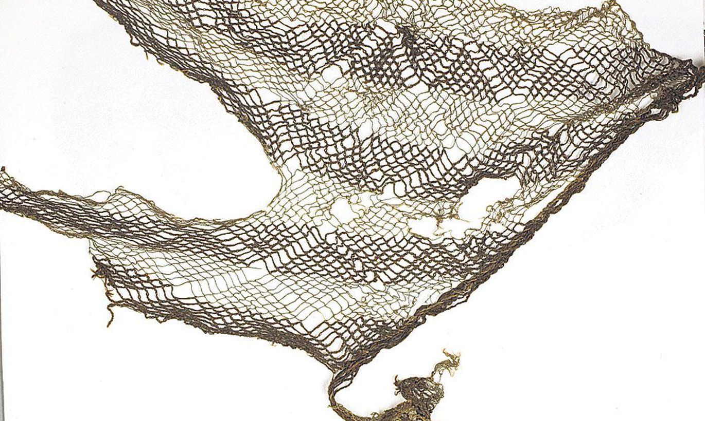
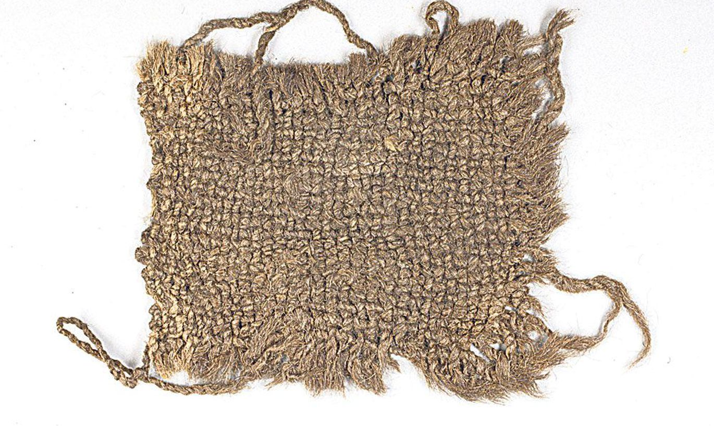

Tartu on jõelinn, tuntud kui Emajõe Ateena. Emajõe soisele tasandikule, kus Tartu kohale moodustunud liivased künkad tegid jõeületuse kergemaks, tekkis asulakoht juba mitmeid sajandeid tagasi. Toome neemikul asuva linnuse algusaeg on dateeritud 5. sajandisse ja praegustesse linna piiridesse jääv Kunda kultuuri asukate leiukoht Ihastes võib pikendada Tartu vanust isegi kuni 10 000 aastani. Vanades Vene kroonikates on Tartut mainitud esmakordselt 1030. aastal, kui Jaroslav Targa väed linna vallutasid. Need kirjalikud allikad teevad Tartust Baltikumi vanima linna.
(Allikas: https://visittartu.com/et/ajalugu-ja-huvitavaid-fakte)
 Tartu Ülikooli arheoloogid leidsid Tartu toomkirikus lahti kaevatud hauakastist brokaaditükikesi. Toomkirikust pole arheoloogid varem saanud muid tekstiilileide kui üks keskaegne brokaatpael. Leidude hulgas oli iseloomulik tekstiil 14. sajandist, kui triibulised kangad olid moes.
Tartust on leitud selliseid triibulisi tekstiilitükke üsna palju. Teine koht, kust on leitud palju tekstiile, on kesk- ja uusaegsete linnade jäätmekastid, ja kõige rikkalikumad Eestis on Tartu jäätmekastid. Jäätmekastidesse ei pääse õhk, pinnas on tihe ja niiske, sõnnikune kiht on natuke happeline. Tartust on leitud ribasid, mis võivad olla õmblustöö jäägid, aga võisid olla ka kempsupaberi või hügieenisideme rollis.
(Allikas: https://tartu.postimees.ee/1232840/arheoloogid-panevad-vanad-kangad-raakima)
1985. aastal toimusid Tartus arheoloogilised kaevamised praeguse Lossi tänava õppehoone kohal. Kõige huvitavamaid leide sisaldas seejuures üks 13. sajandi lõpust pärinev jäätmekast, kust leiti mõned värvikirevate maalingutega klaasikillud. Maalingutega klaaspeekrite kilde avastati ka mujalt Tartust.
Tervena on selliseid 13. saj. teise poole - 14. sajandi esimese poole emailmaalingutega klaaspeekreid kogu maailmas säilinud vaid mõned üksikuid. Praegu on kogu maailmas teada vaid 158 vastavat leidu, ning ligi kümnendik neist asub Eestis, leiukohtade pingereas hoiab maailma mastaabis aga esikohta Tartu, kust leitud juba vähemalt 12 peekri kilde.
(Allikas: http://ares.nlib.ee/HORISONT/2000/03/b1411110x.html)